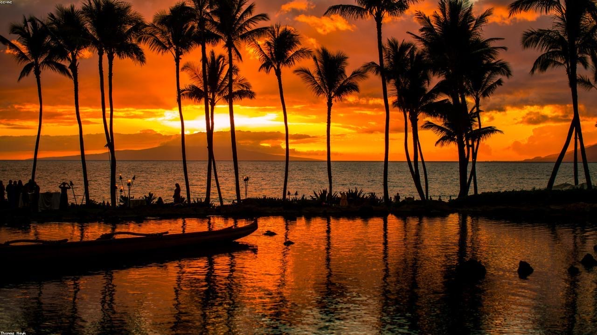

Top Attractions
Snorkel coves, valley waterfalls, and the island's most famous crater hike.
See the attractions →
A local-leaning guide to the beaches, hikes, and (especially) the seafood.
Most Hawaii guides cover the same ten stops. This one is the trip I'd actually take you on: the attractions worth your time, a food guide built around fresh seafood, and a gallery to set the mood before you go. Whether it's your first visit or your fiftieth, the goal is simple — eat well, swim often, and leave the place better than you found it.
Snorkel coves, valley waterfalls, and the island's most famous crater hike.
See the attractions →Where to find shrimp trucks, poke counters, and harbor-side fish markets.
Find the seafood →Sunsets, surf, sea turtles, and waterfalls to get you dreaming.
Browse the gallery →